Campaign - Mercury Content Label: Overview
VC-USMay 2005
Subject:
2002-2004 Model Year Passat W8,
2004-2005 Model Year New Beetle,
2004-2005 Model Year Touareg and Phaeton
and 2000-2003 Model Year Eurovan Camper/Weekender
Install Mercury Label on Vehicles Registered
in the States of Vermont, Maine and Connecticut
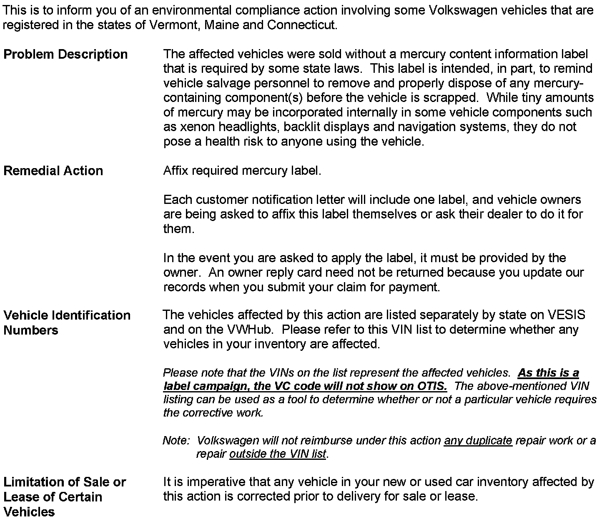
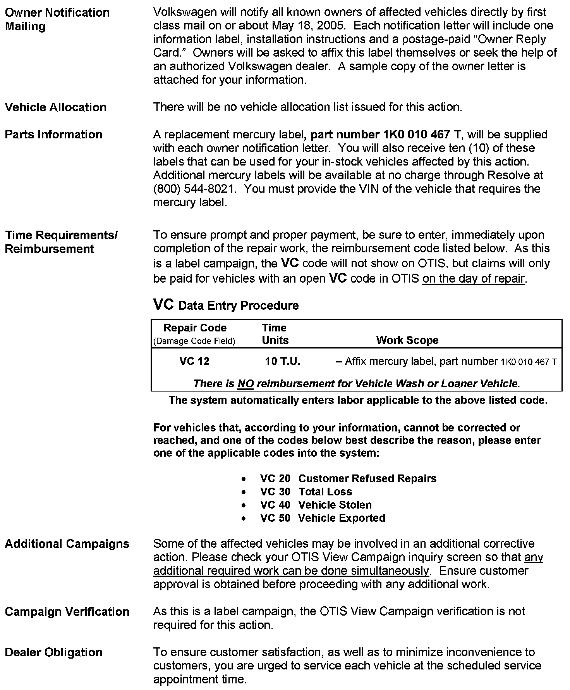
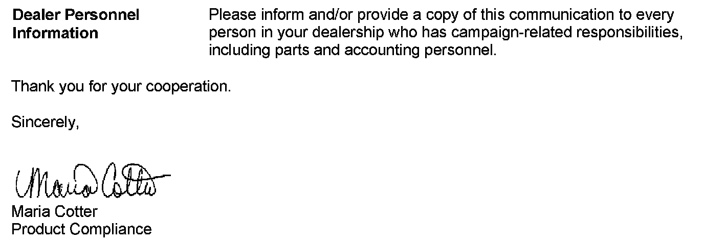
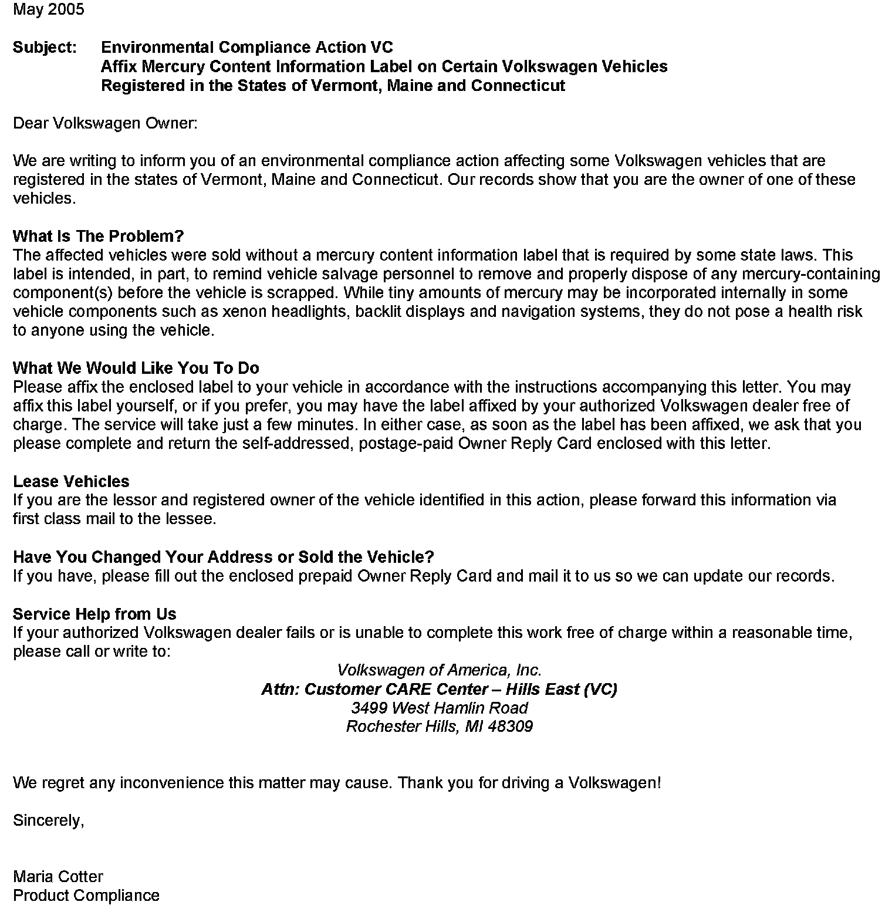
Set the parking brake fully. Move the selector lever to P (Park) for an automatic transmission or N (Neutral) for a manual transmission. Switch off the engine and remove the ignition key.
LABEL LOCATIONS ARE SLIGHTLY DIFFERENT FOR EACH MODEL. ENSURE THAT CORRECT VEHICLE MODEL IS SELECTED BEFORE AFFIXING LABEL.
New Beetle
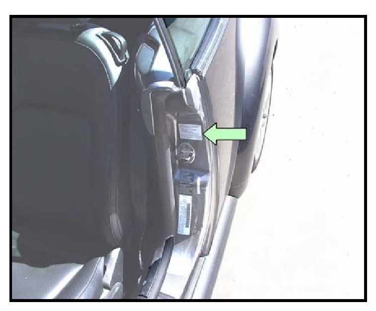
- Open driver's door
- Clean the vertical surface above door striker with soap and water and dry thoroughly
- Remove backing from new mercury label (1K0 010 467 T) and affix to clean, dry surface of the B-pillar -arrow-
- Ensure that no bubbles appear under new label
- Close door
Passat W8
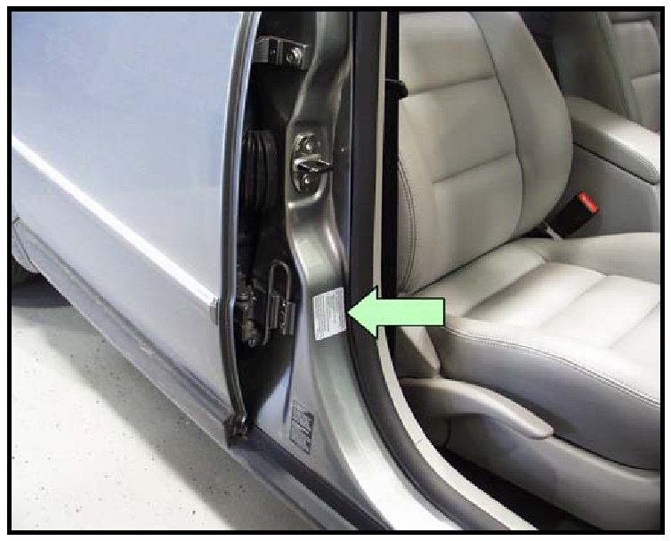
- Open front passenger door
- Clean the vertical surface below lock striker area of the B-pillar with soap and water and dry thoroughly
- Remove backing from new mercury label (1K0 010 467 T) and affix to clean, dry vertical surface of B-pillar -arrow-
- Ensure that no bubbles appear under new label
- Close door
Touareg
- Open driver's front door
- Clean the lower outer vertical surface of B-pillar with soap and water and dry thoroughly
- Remove backing from new mercury label (1K0 010 467 T) and affix to clean, dry lower outer surface of B-pillar -arrow-
- Ensure that no bubbles appear under new label
- Close door
Phaeton
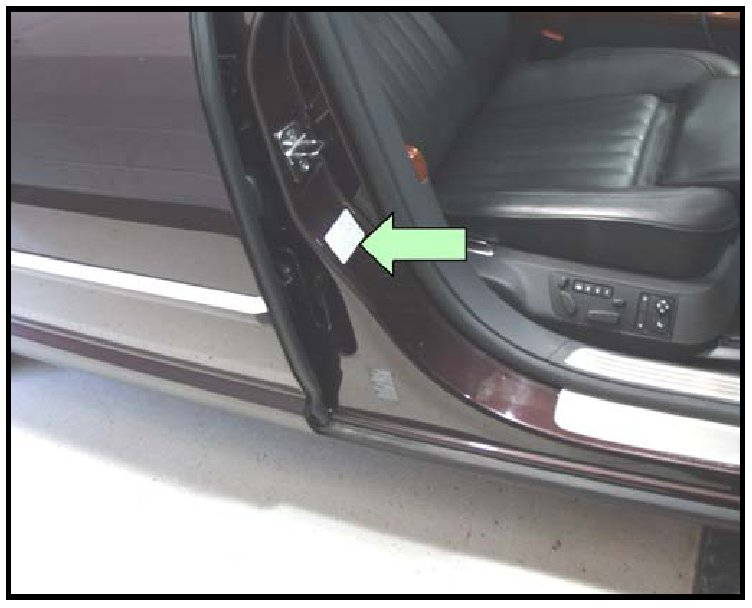
- Open front passenger door
- Clean the surface of B-pillar below door lock striker with soap and water and dry thoroughly
- Remove backing from new mercury label (1K0 010 467 T) and affix to clean, dry surface below door lock striker -arrow-
- Ensure that no bubbles appear under new label
- Close door
Eurovan Camper/Weekender
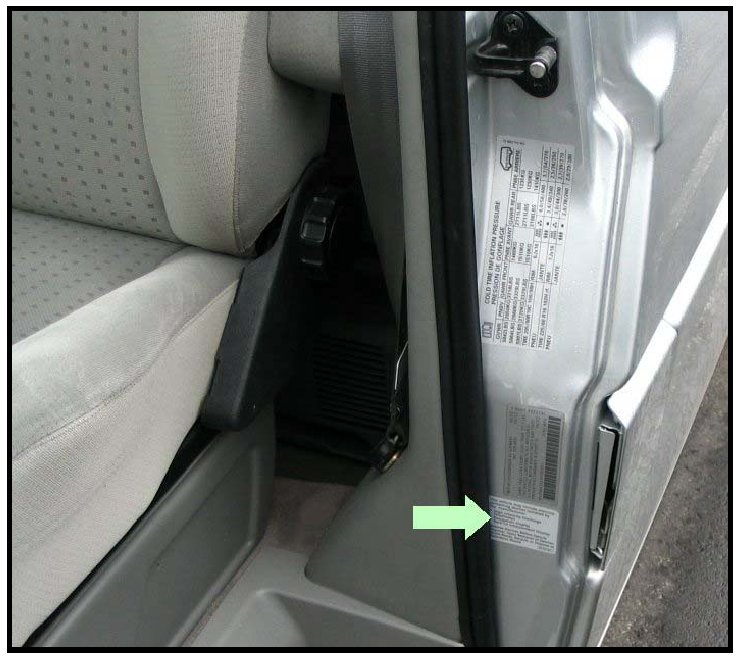
- Open driver's front door
- Clean the surface of B-pillar below the vehicle identification label with soap and water and dry thoroughly
- Remove backing from new mercury label (1K0 010 467 T) and affix to clean, dry B-pillar surface below vehicle identification label
- Ensure that no bubbles appear under the new label
- Close door
Parts:
Work Sequence
LABEL LOCATIONS ARE SLIGHTLY DIFFERENT FOR EACH MODEL. ENSURE THAT CORRECT VEHICLE MODEL IS SELECTED BEFORE AFFIXING LABEL.
New Beetle
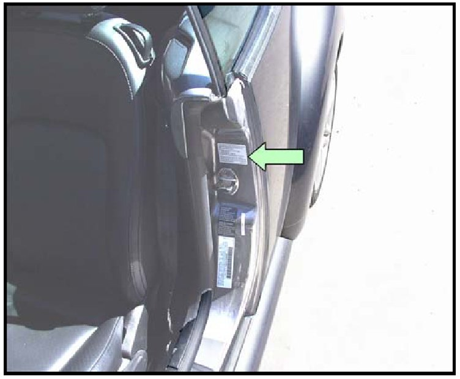
- Open driver's door
- Thoroughly clean the vertical surface above door striker
- Remove backing from new mercury label (1K0 010 467 T) and affix to surface of B-pillar -arrow-
- Ensure that no bubbles appear under new label
- Close door
Passat W8
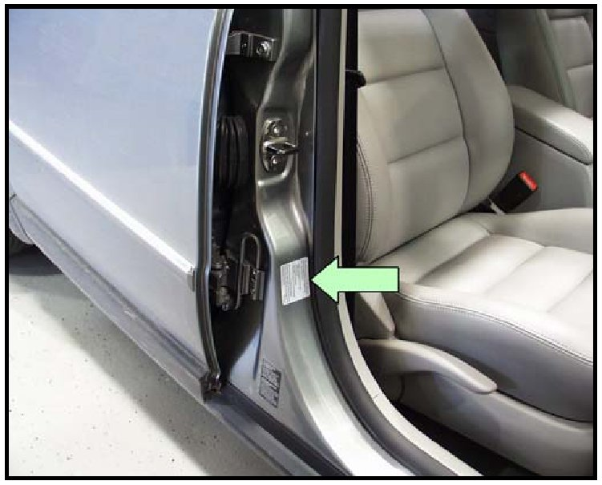
- Open front passenger door
- Thoroughly clean the vertical surface below lock striker area of B-pillar
- Remove backing from new mercury label 1K0 010 467 T) and affix to vertical surface of B-pillar -arrow-
- Ensure that no bubbles appear under new label
- Close door
Touareg
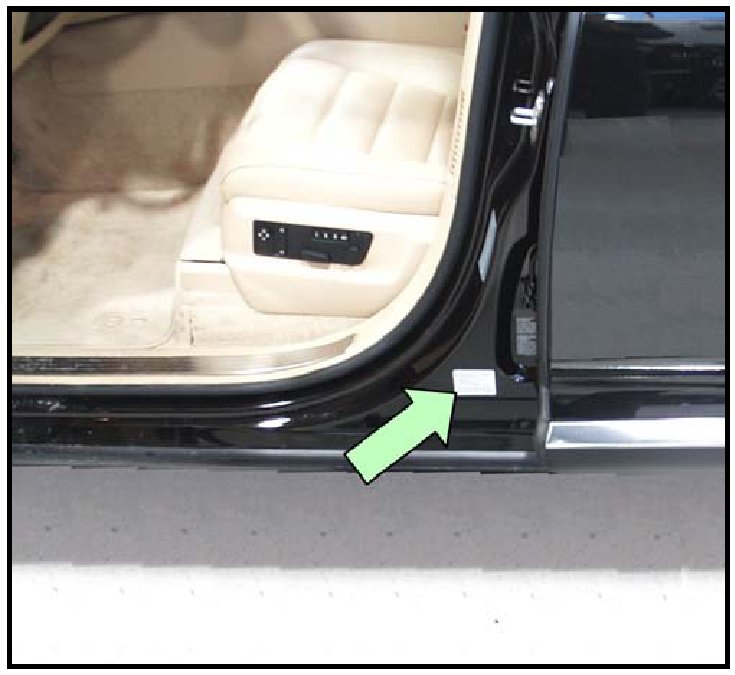
- Open driver's front door
- Thoroughly clean the lower outer vertical surface of B-pillar
- Remove backing from new mercury label (1K0 010 467 T) and affix to lower outer surface of B-pillar -arrow-
- Ensure that no bubbles appear under new label
- Close door
Phaeton
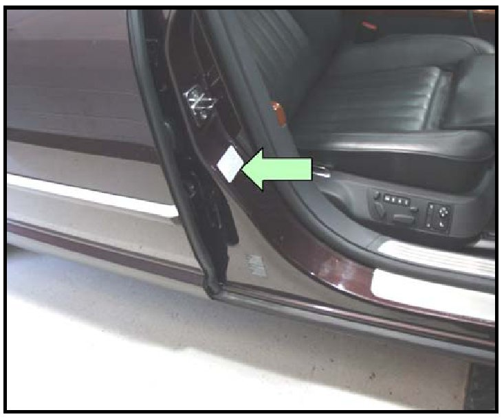
- Open passenger front door
- Thoroughly clean the surface of B-pillar below door lock striker
- Remove backing from new mercury label 1K0 010 467 T) and affix to surface below door lock striker -arrow-
- Ensure that no bubbles appear under new label
- Close door
Eurovan Camper/Weekender
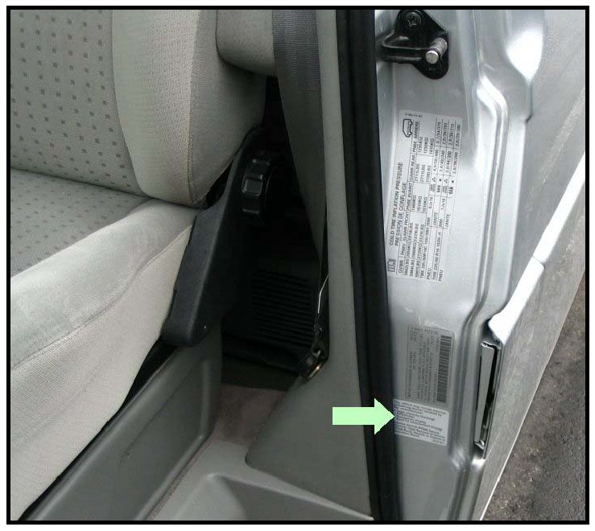
- Open driver's front door
- Thoroughly clean the area of B-pillar below vehicle identification label
- Remove backing from new mercury label 1K0 010 467 T) and affix to B-pillar below vehicle identification label
- Ensure that no bubbles appear under new label
- Close door